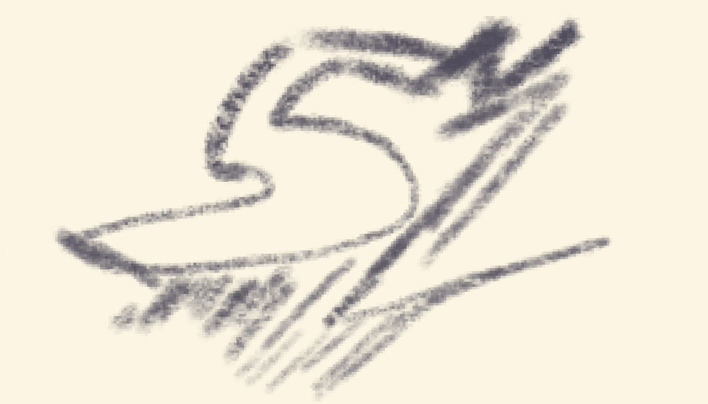
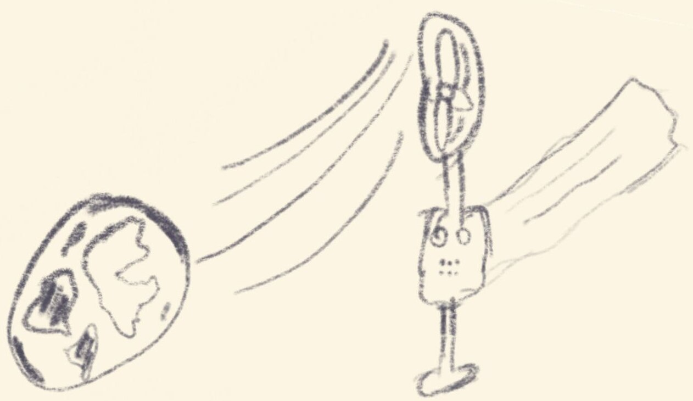
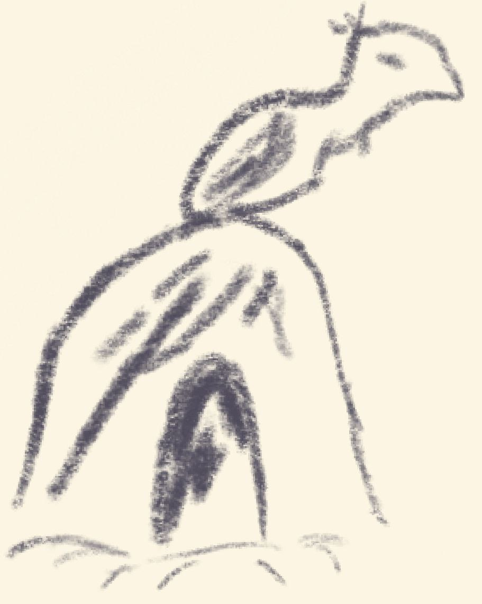
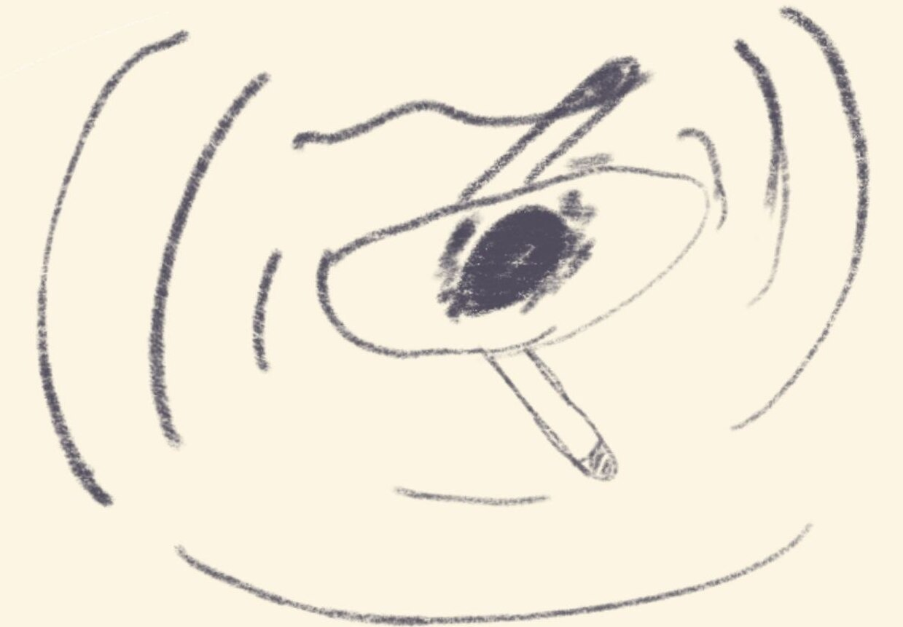
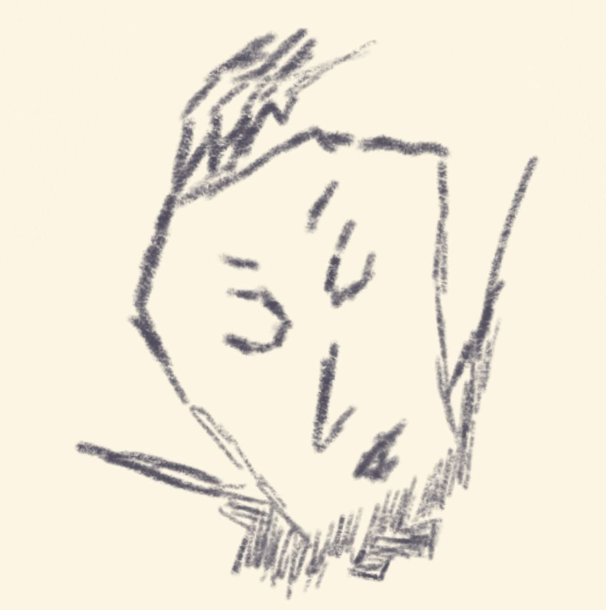

Welcome to the state of the mind, the raw unfiltered untapped mind. Everything I think is everything I spew. There is no purpose to this project. The purpose of this project is to serve my purpose which is serving my lack of purpose so in a way it is a contradicting project.
The waves of the sea stretch over many kilometers, the reach of the wind you could say stretches to the very edge of the earth.

I sometimes find myself thinking and looking back to previous times of peace, I guess you could say its my mind racing to find
familiarity. Those so called simpler times were times of amusement to me. My inner consciousness has a fear of accepting new times
and forgetting old times. It fears that I will forget the warmth of my mother and the firm handshake of my grandfather.

Fear not, for I return to my sea of thoughts every single waking moment.
I do not despise my current state of time yet I would give a lot to walk back down the path of time to meet a familiar atmosphere.
The sun shines above, the rays strike the earth. You could say the reach of the sun stretches to the very edge of the galaxy.

The people run along the tracks and search for their very next moment of purpose but
it seems they have forgot their very greatest purpose. Devotion.
Devote my time to knowledge, devote my time to improvement.
I look forward to the very moment where I find myself finding love to my greatest time devotion and that being my knowledge.
Although I have come to terms with failure, it has been a growing fear for me. I chase improvement yet I can't handle failure. How can I improve then?
Improvement is a lot of stairs to climb through and it is just natural to fall down a couple of steps on the way to one's goal.
Maybe by next summer, I would have changed my tune.
